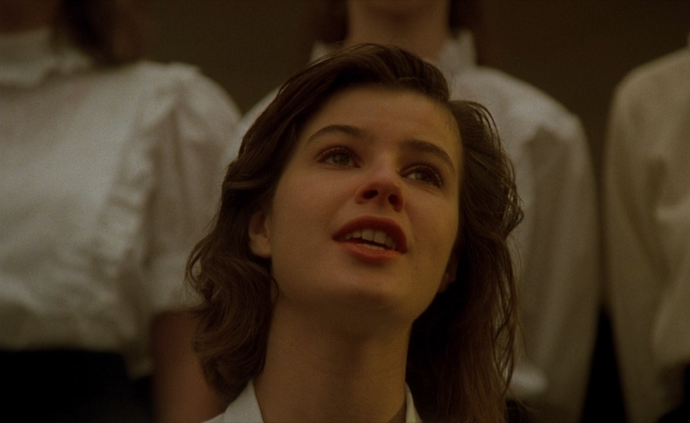

Film replicates and represents aspects of thinking in the way films are constructed and in how films present the physical world to their audience. The philosophical thinkers Maurice Merleau-Ponty and Daniel Frampton discuss the ways in which film replicates the holistic process in which humans observe reality and reproduces the way consciousness organizes such observations. In this paper, I will show how these two thinkers agree with how film is able to present holistic units of an object, idea, or being, which is analogous to how the human consciousness forms holistic concepts of objects, ideas, or beings. I will also use the non-stereotypical French-Polish drama, The Double Life of Veronique, with its unique approach to film narrative and character disclosure, to explicate examples of Frampton and Merleau-Ponty’s link between consciousness and film.
 The Double Life of Veronique (1991) 00:03:51Merleau-Ponty describes film in their essay “The Film and the New Psychology”, as “the closest possible reproduction of a drama which literature could evoke only in words and which the movie is lucky enough to be able to photograph” (149). In the same way a film discloses itself to an audience, Merleau-Ponty describes and compares film analysis to the unitary, holistic ways the human visual and auditory senses produce information with incomplete but numerous data sources. Merleau-Ponty describes the basic function of human consciousness as something that reveals the interior (personality/mood/nature) through a collection of observations of the exterior that always results in a unitary concept, not just the aspect (color, shape, proportion) itself (145). A person is more completely understood, and their motive can be made clearer if one can observe their body language, the tone of their words, or their “gestures and bearing” (146). This works in film as well. Film presents a myriad of aspects through literary/cinematic elements/devices, including conflict/synthesis within the mise-en-scene, the color grading, editing composition, sound design, musical score, acting, etc. These elements all work together to express what a film is, its character or story, its personality, mood, or theme. Summarizing these conclusions as the “new philosophy”, Merleau-Ponty reiterates that “[this] new philosophy also brings a new concept of the perception of others” (146). For example, the words an individual speaks “bears its meaning in the same way that the body incarnates a manner of behavior” (Merleau-Ponty, 147). Subsequently, the musical score of a film reinforces and conveys its theme in the same way as the mise-en-scene or editing do, yet each of the three are crucial to the film’s unitary concept (theme, or mood) (148). Different aspects of a person, object, or piece of art will lead to producing an understanding of their “personality” as a whole, but also each element conveys their holistic nature individually.
The holistic nature and disclosure methods of human consciousness concerning objects or a person can be understood and function the same when analyzing and searching for the mood or theme (the “personality”) of a film, specifically in The Double Life of Veronique (1991). The Double Life of Veronique is broken up into three separate acts, one following Weronika (Irène Jacob) in Poland, the second about Veronique (Irène Jacob) in France, and finally the last act of Veronique meeting the Puppeteer (Philippe Volter), converging the first two acts (The Double Life). The film’s theme is primarily the connection between Weronika and Veronique, while never directly stating what this connection is, everything in the film points to this connection. While The Double Life of Veronique is not as straightforward as other films may be, just as the body language, tone of voice, or spending a day with someone can indicate “something” is afoot with an individual, the mystical musical score, similarities between the scenes of Veronique and Weronika, and the three separate acts each point to this unexplained connection between the women. Merleau-Ponty writes, “The meaning of a film is incorporated into its rhythm just as the meaning of a gesture may immediately be read in that gesture: the film does not mean anything but itself” (150). The theme of this unknown connection between the two women is explicit when the two are together in Poland in frame 00:15:15, when the film cuts to Veronique directly after Weronika’s death at the end of act one at 00:29:48, and during the scene of the Puppeteer telling Veronique his story of the two girls at 01:29:22-01:33:34. Each of these instances reveal the “meaning” of the film immediately, the connection between the women, while they also build upon the nature of this unexplainable connection. Just as Merleau-Ponty describes how the visual information of an object or person can convey tactile information or how someone’s voice may sound: a more holistic conclusion than only the observation itself, the cut directly to Veronique after the death of Weronika tells the audience much more about the theme of the film than only that the film is moving to a new shot or act (145; 00:29:48). In the same manner the story from the Puppeteer about the stove doesn’t mean as much without knowing that Veronique quit performing after Weronika’s death, or without first seeing Veronique take the photo of Weronika earlier in the film, but all three allude to the same unitary concept (The Double Life). Film has this way of breaking up different observations and information over time, repetitively and sequentially, while still utilizing the same process of thinking and association that occurs naturally in the consciousness of the audience throughout everyday life. Film deconstructs, in a way, the method in which consciousness works and forms concepts, which then requires the replication of those processes for a film to be analyzed and (or) digested.
Frampton, I would argue, agrees with Merleau-Ponty to a large extent that film reproduces and utilizes the method consciousness uses to interact with and conceptualize reality. Frampton builds upon this point in their essay “Filmosophy”, writing,
Film is not simply a reproduction of reality, it is its own world with its own intentions and creativities. Cinema is the projection, screening, showing, of thoughts of the real. (187)
Film does not merely show and recreate the physical world, it shows and recreates the physical process consciousness uses in the mind (from the human senses) to understand the world. Frampton continues a few thoughts later, “film becomes the explanation of our position in the world—film acts out an interaction with a world” (188). Film relates to consciousness according to Frampton through a formulaic reproduction of the process humans use to interact and think about their surroundings or objects of focus. Frampton concludes that film “becomes a mirror for us to recognize our interaction with our world… is a kind of intention, a kind of thought (188). A comparable thought process and interaction that occurs in the consciousness when an audience member interacts with their real life, occurs when they view a film and to the characters within the film interacting with their cinematic world. According to Frampton, this layering and replication of the natural processes of association (observations which results in unitary concepts) by film can be used to understand those same natural processes that occur in the consciousness of our minds. In the same way Merleau-Ponty describes the “new philosophy” as something that brings the holistic nature of an object, being, or piece of art to the forefront from single points of data, Frampton’s “filmosophy” “proposes that seeing film form as thoughtful” helps an audience to understand how a film can be thoughtful through different cinematic elements (146; 189). Each of these separate cinematic elements of a film, arranged by the filmmakers, reveals and builds upon a film’s holistic theme or the unitary concept that is the film’s cinematic world.
The Double Life of Veronique has a few examples that can be used to explain Frampton’s point of view on how film replicates consciousness. One such example is the sequences when Weronika gets the interview and begins the singing job resulting in losing her life at 00:16:20-00:29:49, while bookended with the encounter of the two women at the square (00:14:17-00:16:20) and the start of act two following Veronique (00:29:50). This section of the film follows an ordinary set of circumstances a member of society could encounter, getting a job, getting excited about it, and an accident happens at work. The events happen in the same way they would happen in the world, sequentially, but the events of the film are obviously influenced not by just the real world, but by the film’s cinematic world. How the audience receives the information about the oddities of the world of The Double Life of Veronique are through the same processes of consciousness, this web of interrelated associations that form real life. In the film, between the foreboding musical score, the similarities between Veronique and Weronika, and specifically in this part of the film—the fact that it starts with seeing Veronique for the first time and then ends with following her after Weronika’s death—the nature of the film being this mysterious connection between the two women is revealed.
For a more precise example Frampton writes, “When a film frames a person that act of framing creates a way of seeing that person” (190). This way of seeing is a function of the cinematic form, that not only physically depicts a character, but depicts them in the mise-en-scene in a “dramatic” way (190). The same process that happens in the consciousness when interacting with another person is happening intentionally within the film’s composition, specifically with how a character is framed within a shot. This process results in a holistic unitary concept of the person or film character that is created within the mind (or filmind) (189). A shot that exemplifies this intentional framing of a character is the shot of Weronika in her apartment, the camera positioned behind the window before the concert at 00:23:56-00:24:31. This handheld full shot shows a vulnerable Weronika, dressed in white undergarments, take a shirt to her mirror to get prepared for the concert, is emotionally overcome for a moment breaking her composure, and then walks to look out of the window (and toward the camera). The reflection of the buildings across the street behind the camera on the window, as well as the yellow fill lighting in this shot, places a ghostly veil in front of Weronika giving her presence an almost immaterial appearance. This effect of the reflection, Weronika being overcome, and her being dressed in white while as exposed as she is, all “frames” the character within the cinematic world and narrative, that she is fading out of the world and will soon pass away. This shot continues to show that Weronika is getting sick from performing as well. Without ever having to explicitly depict every facet of her character’s nature, the film continues to reveal Weronika’s interior condition. This is the same process in which humans interact and build the characters of other people through the consciousness over a set of interactions, except controlled and replicated through the form of film.
Frampton and Merleau-Ponty seem to agree on the idea that through analyzing film as well as its effects and utilization of the systems of human perception (the human system of thinking), film and consciousness can both be understood to a higher degree. Film reproduces and utilizes the methods consciousness uses to interact with and conceptualize reality and can present holistic units of an object, idea, or being, resembling how the human consciousness forms holistic concepts of the same subject. The Double Life of Veronique through its deliberate use of characterization and narrative building, provides validating examples of Merleau-Ponty and Frampton’s philosophical link that film and consciousness share.
Frampton, Daniel. “Filmosophy.” Westfall, pp. 184-192.
Merleau-Ponty, Maurice. “The Film and the New Psychology.” Translated by Hubert L Dreyfus and Patricia Allen Dreyfus, Westfall, pp. 143-151.
The Double Life of Veronique. Directed by Krzysztof Kieślowski, performances by Irène Jacob, Philippe Volter and Sandrine Dumas, Miramax, 1991.
Westfall, Joseph, editor. The Continental Philosophy of Film Reader. Bloomsbury Academic, 2018. ISBN 1474275737.